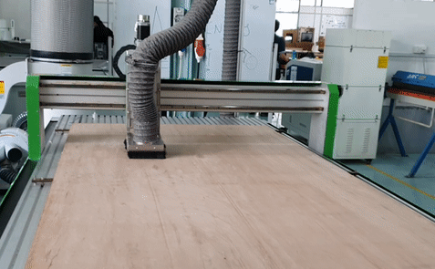

My Project: ReMediMind
For my final project, I decided to create an intelligent medicine box that can remind the user to take their medicine and keep track of whether they took their medication or not. I decided on this project due to the fact that it is practical and useful. In Singapore, almost everyone has someone in their family who is on long-term medication. It could be due to high blood pressure, diabetes or cancer. I am no different and in order to create something that can help my family members, I settled on this idea. This project consisted of the following parts:
- The box and its dividers
- The PCB along with its electronics (servo motors, LCD, buzzer, ect.)
- The Locker door opening mechanism
First and foremost, I have to decide how big my overall project is going to be. I took some measurements to give myself some guidelines when designing the medicine box. The first consideration is how I would store the medicine. Realistically, I could only come up with two options, store the medicine (pills) themselve or store the container in its entirety.

Due to medication having many different shapes and sizes I decided to store the medicine container in its entirety to accomodate as many different types of medication as possible, even liquid (since they are stored in bottles). With some quick measurements of the medicine container my family members use and some searching on the internet, I decided that a locker size of the dimensions 70mm x 170mm x 100mm would be sufficient. The LCD that I want to install on the center of the box is about 80mm wide due to it requiring a little more space to mount, but I decided to make the centre 20mm wide to give myself more space to work with. Now with these guidelines, it was time for me to make a general sketch of how I want the ReMediMind to look like.

Above is how I planned for the ReMediMind to look like upon completion. Now, I have to plan how I want to fabricate each part of my project.
- The outer walls of the box should be sturdy and rigid, therefore I decided to use the Large Format CNC to fabricate it.
- The locker doors should be thin AND transparent to allow the User to see their medication therefor I chose to laser cut clear acrylic.
- The dividers for the lockers should be thin but still rigid therefore I would laser cut wood for that.
- The locker opening mechanism that I planned to use included a rack and pinion along other things so that would be a mix of laser cutting and 3D-printing.
Outer Wall [large format CNC router]
Firstly, I used Fusion 360 to model the outer walls of the medicine box. Since the medicine box's front will be where the LCD screen, locker doors and buttons are, I only need 5 sides.
I ensured that the design was parametric to ensure that I can easily adjust my model according to the thickness of the wood provided. The reason why there are so many parameters here is to account for the thickness of the dividers as well as the size of the lockers and tabs for interlocking joints.

With the 3D model done, I exported the 2D sketch of each outer wall as a .dxf file and proceeded to the large format CNC to machine the parts. The other parts you see here on screen belong to my classmates as we were machining all our parts together. We imported all our .dxf files onto the VCarve Pro software. There are only a few important settings we have to edit, depth of cut, specify how we want to cut pockets (if there are any), where we want the tabs to be and last but not least, fillet type. The importance of the fillet is to ensure that corners are machined appropriately. This is especially important for interlocking joints as it allows the tabs to be inserted completely.
To secure the large piece of wood to the router, we used a power tool to help us screw the wood provided to us to the wood that is already secured onto the router. We then used the controller to set x and y zero as well as the z stop probe to callibrate the top surface height. Last but not least, I switched on the vacuum to ensure that the chips from milling flying out is reduced.

Once the CNC machine finished its cutting, I used a chisel and a hammer to get rid of the tabs still attatching my components to the wooden board. As you can see in the image above, this was the result. I then filed the rough edges down and also used sandpaper to smoothen out certain edges. The most important thing for me was to ensure there were no splinters or loose hanging wood as that may come back to bite me in the future. I then used a rubber mallet to help me assemble the outerwalls of the box together as it was quite tight fitting. I chose the rubber mallet to prevent any damage to the surface and made sure to slowly knock/press the pieces into place.
Outer Walls Complete!

With the outerwalls done, I moved onto laser cutting the other components such as dividers and doors
Locker and door
I decided to fabricate the dividers using wood and the doors using acrylic. The very first step would be to design them using Fusion 360. I decided to continue working on the same file since my outer walls of the medicine box was already designed there and is parametric. This process was not linear at all as designing the dividers took several revisions and re-considerations to lead up to this point. The redesigns could be summerised as such:
- Rectangular holes were added at the top to allow the fitting of a servo motor
- 3 Holes added to accomodate hinges
- Holes for servo motors were moved down to a specific height to allow the mounting of a gear and the fitting of a rack below
The reason why there were these new criterias for the design was due to it clashing with the design of the door opening mechanism or needing more space to fit the hinge or fit the given hole for the locker door.
3D model of dividers
Laser cutting process
3D-printed hinges

I needed hinges for my doors which fortunately enough, I found a model of a parametrically designed hinge posted by a user on Thingverse and edited it to fit my application. I then 3D-printed the hinge using the available Ultimakers in the FabLab. My biggest advice for 3D-printing this hinge is to set the wall expansion to -0.2 in the Cura slicer to prevent the hinge merging into one piece.
3D model of door

Making the door was a little tedious as I had to make minor adjustments here and there to the 3D model to ensure that the door could fit properly. This led to me needing to re-cut the model several times on the laser cutter.

As mentioned earlier, I chose clear acrylic for the door to allow the User to see their medication. The 3 holes on the door allow me to mount the hindge onto it and the rectangular gap on the side is to fit the hinge through.
Door opening mechanism

For the door opening mechanism, I wanted to try a more challenging method for fun, therefore I decided on a rack and pinion design to open and close the door. Above is a rough sketch of what I had in mind when designing this.
I used Autodesk Inventor's "Generate Spur Gear" function to easily obtain the gear design without needing to do it manually. For the rack, I looked up a datasheet to get the correct dimesions for it. As you can see everything is slowly coming together and I can almost start the assembly for the locker system
As you can see further above, the rack I designed has a long slot at the front, This was to allow me to fix in a movable hinge that could slide along the rack in case the rack over-extends. This was a neccessary precaution as the whole system may buckle or break if no tolerance is given. This little hinge took many attempts for it to work perfectly as intended due to needing to increase/decrease the size or spacing between this joint and the rack. Consequently, this resulted in me needing to re-print the component several times. Fortunately for me, it is small and I did not require that much infill therefore the printing time is below 20mins.
Last but not least, I have to create a "track" for the rack to ensure it doesnt move out of its intended direction and to secure the rack firmly against the pinion so that they always "bite".
Assembly of locker system
Inside locker